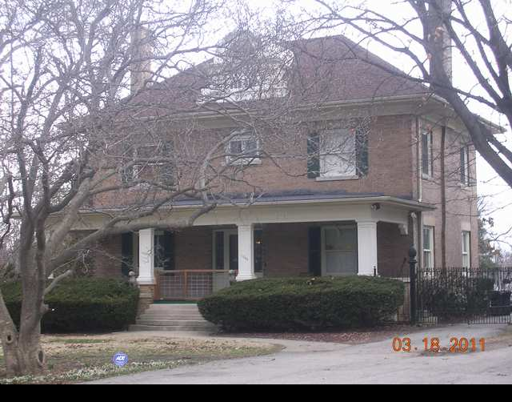

1308 E. Washington

- E.D. & Marian Seikman Residence
- Built in 1905 in Prairie/Colonial Style
- Seikman was manager of Fidelity Life Association
- Seikman Sold it 5 years later to Spencer Ewing.
- Center Hall layout, fireplaces at end walls, dormer of interest